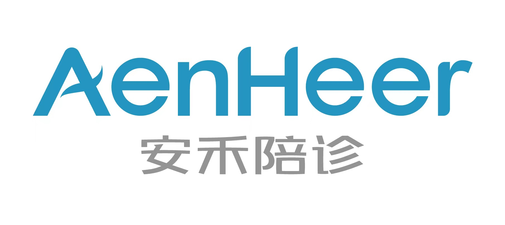

时间：2023-05-09 访问量：1179
伊戎陪诊，助您就医无忧！
一位沈阳的窦性心律失常女性患者，61岁，联系我们的时候非常慌张焦虑，说自己常常失眠，心慌气短，烦躁不安，自己容易胡思乱想，最近有病情加重的趋势。在当地接受治疗并没有明显好转，整体给人一种很焦躁无助的感觉。由于患者的医疗保险所在地在沈阳，我们先帮助她办理了医保备案相关手续，然后辅助她预约了中国医学科学院阜外医院的心内科专家。就诊当天，患者在我们的陪同下顺利办理了就医手续。专家了解患者大概情况后开具了相关的检查——心电图、心脏彩超及Holter。检查结果为患者窦性心律失常，房性早搏，心动过速中的心搏总和占比约为5%，整体情况可以先服药物控制。
一周后我们再度陪同患者来到中国医学科学院阜外医院的内科复查，心电图结果显示病情明显好转，患者也觉得难受不适感明显减少，专家建议持续用药2个月再来复查。患者现在明白了自己的病情，也不担心胡思乱想了，说会好好吃药配合治疗，并感谢我们的服务。我们的陪诊员看到她没有负担的回了老家，也衷心的祝福她早日康复！
 科普分享|内容摘自三甲医院专家文章
科普分享|内容摘自三甲医院专家文章
窦性心律失常
一、基本简介
窦性心律失常(sinus arrhythmia)系窦房结发出的激动显著不规律，使心房和心室的节律也不规则。包括窦性心动过速、窦性心动过缓、窦性心律不齐、窦房结折返性心动过速、窦性停搏、窦房传导阻滞及病态窦房结综合征等类型。
二、病状表现
窦性心律不齐通常没有明显的症状。单纯的窦性心律不齐一般不会导致心脏泵血量明显减少，故相比于室性心律失常，窦性心律不齐不会出现心脏排出量减少的症状，如头晕、黑矇（眼前发黑、视物不清）、胸闷等。
如果是疾病导致的窦性心律不齐，会出现跟基础疾病相关的症状。如心肌缺血可以表现为胸闷、胸痛，心律明显不齐时偶可有心悸症状。
三、并发症
在心率过低或过速时可能出现眩晕、晕厥等并发症。
四、预防
积极治疗心包炎、心肌梗死等原发疾病，定期复查。
严格按照医生要求服用药物，服药期间如有不适，需要及时与医生沟通。
患有先天性心脏病的人群，积极治疗，并定期进行检查。
五、检查
本病主要通过心电图、动态心电图等进行诊断和评估。
心电图：心电图是诊断窦性心律不齐的首选检查，可以了解心脏电学的异常。
动态心电图：普通心电图记录的是心脏在比较短的时间内（一般为 15 秒 ～ 数分钟之内）的心电变化，而动态心电图可记录 24 小时甚至更长时间的心电变化。这项检查可以捕捉到阵发性的心律失常。
超声心动图：目的是判断患者有无心脏结构和功能的异常。
六、治疗方式
如果是生理性因素引发的本病，一般不需要特殊治疗；如果是其他因素引发本病，一般需要确认病因，对因、对症治疗。
药物治疗
β 受体阻滞剂：如比索洛尔、美托洛尔等，目的是减慢心律，控制心律，缓解症状，改善心脏功能，适用于心动过速者。
钙通道阻滞剂：如地尔硫卓、维拉帕米等，目的是控制心律，缓解症状。
其他治疗
消融治疗：目的是改善心脏收缩功能，延缓疾病进展。适用于病情较严重者。
对症医院推荐（仅供参考）
中国医学科学院阜外医院
复旦排行：全国心血管病科排行榜第1名
复旦大学附属中山医院
复旦排行：全国心血管病科排行榜第2名
首都医科大学附属北京安贞医院
复旦排行：全国心血管病科排行榜第3名
中国人民解放军北部战区总医院
复旦排行：全国心血管病科排行榜第4名
浙江大学医学院附属第二医院
复旦排行：全国心血管病科排行榜第5名
 4008382558
4008382558